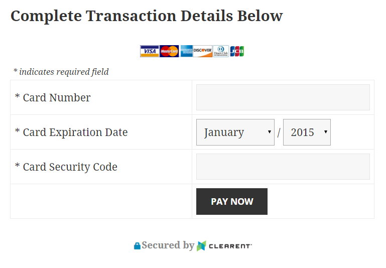

Documentation and examples
Do you have a need to accept payments on your WordPress site? Sometimes what seems like a simple task can quickly become overwhelming as you look into the options of accepting payments online. Then pile on the complexity of security, with the number of data breaches over the past few years, small business can’t take the risk of being the next headline for a data breach.
You have a simple need, you want to take payments or donations on your website to help your business be more efficient. Clearent has worked hard over the years to provide business various ways of accepting payments to help businesses run smoother. Our WordPress plugin may be just the thing your company needs to get started to accepting payments online.
The Clearent WordPress plubin allows businesses to add a payment option to their website by adding simple WordPress shortcode to any page in your WordPress site.
[clearent_pay_form amount="41.77" require_csc=true]
